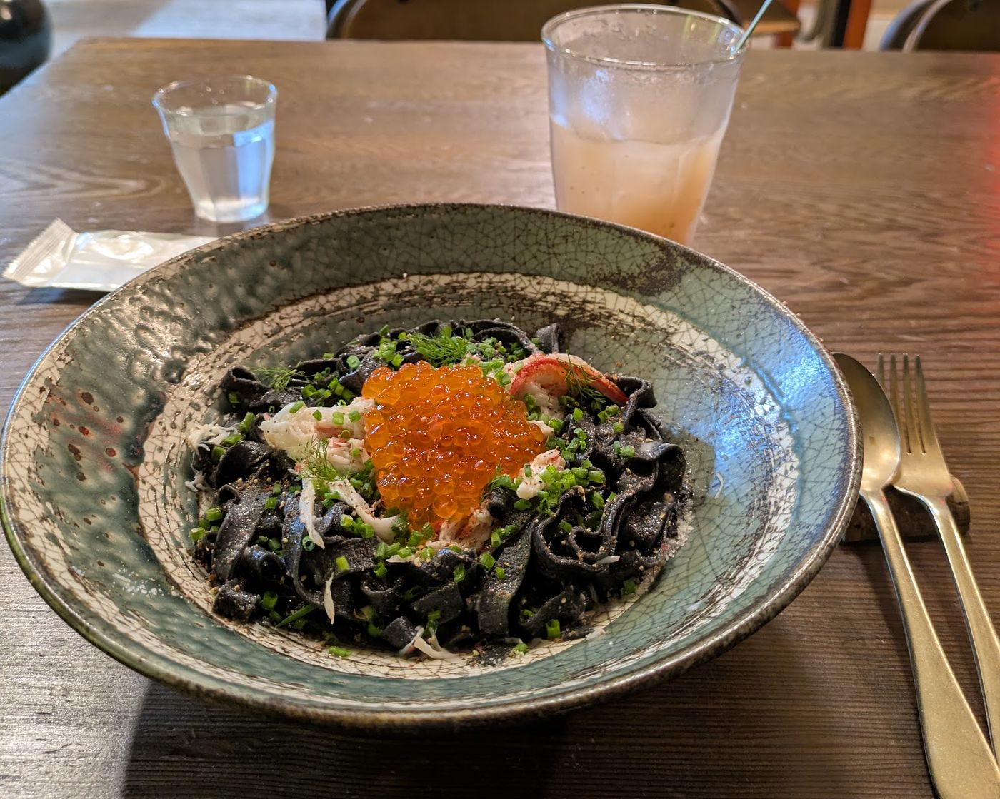

お品書き
料理の例、ドリンク、口コミで見かけた情報の順に載せています。
掲載記事(2025年1月)、2025年夏のメニュー、Googleマップのクチコミ。出どころの違う情報は、ブロックを分けてあります。
一皿の写真の例



写真はGoogleマップに投稿された一皿の例で、上のお品書きの料理の写真ではありません。
口コミで見かけた情報
ここからは、Googleマップのクチコミに書かれていた内容です。お店の公式の情報ではなく、時期によって変わることもあります。
- 口コミによると、カレイのムニエルは2,000円で、スープ&ドリンクのセットは別に+600円との声があります。
- 口コミによると、パスタとドリンクのセットは3,300円程度との声があります。
- 口コミによると、クロワッサンは400円で、テイクアウトしたとの声があります。
- 口コミによると、佐渡産のタコの出汁とにんじんのスープがあったとの声があります。
- 口コミによると、ムール貝は佐渡の海で捕れたものとの声があります。
- 口コミによると、お支払いはPayPayが使えたとの声があります。
魚も、スープも、「素材の味を活かしました」という内なる声が伝わってくる。
メニューと価格のこと
料理もドリンクも、季節やお店の都合で変わることがあります。最新のメニューと価格は、Instagramまたはお電話でお問い合わせください。